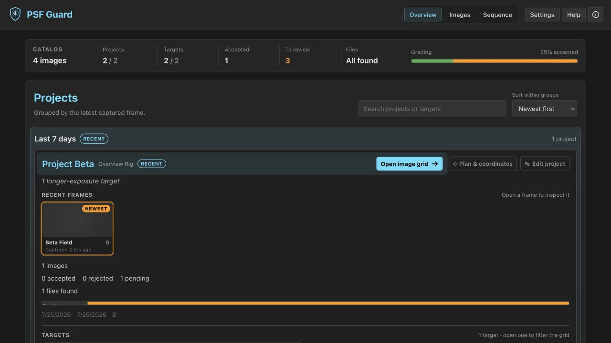
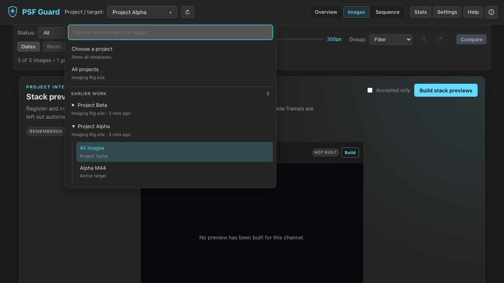
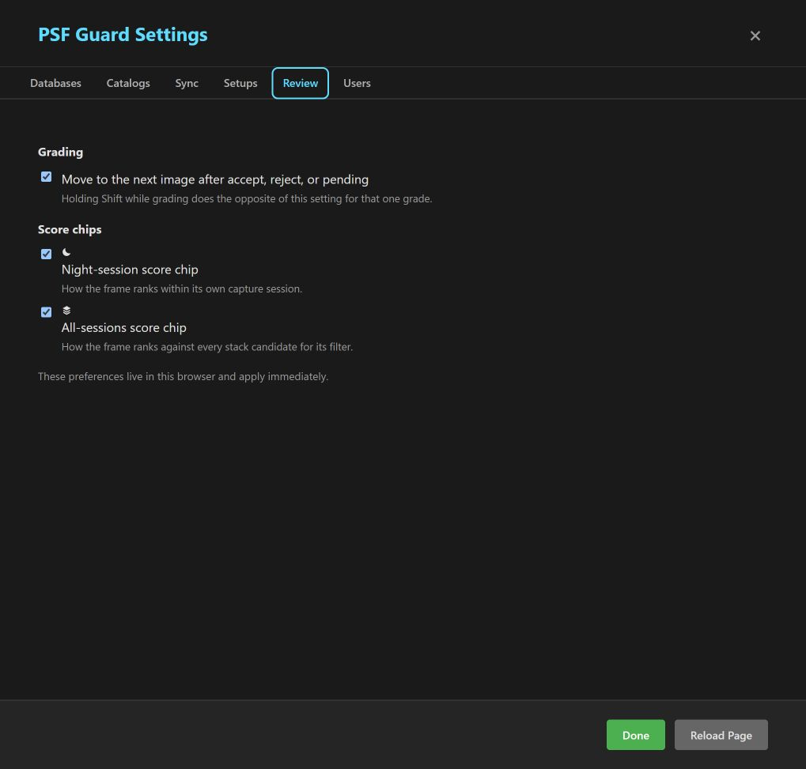
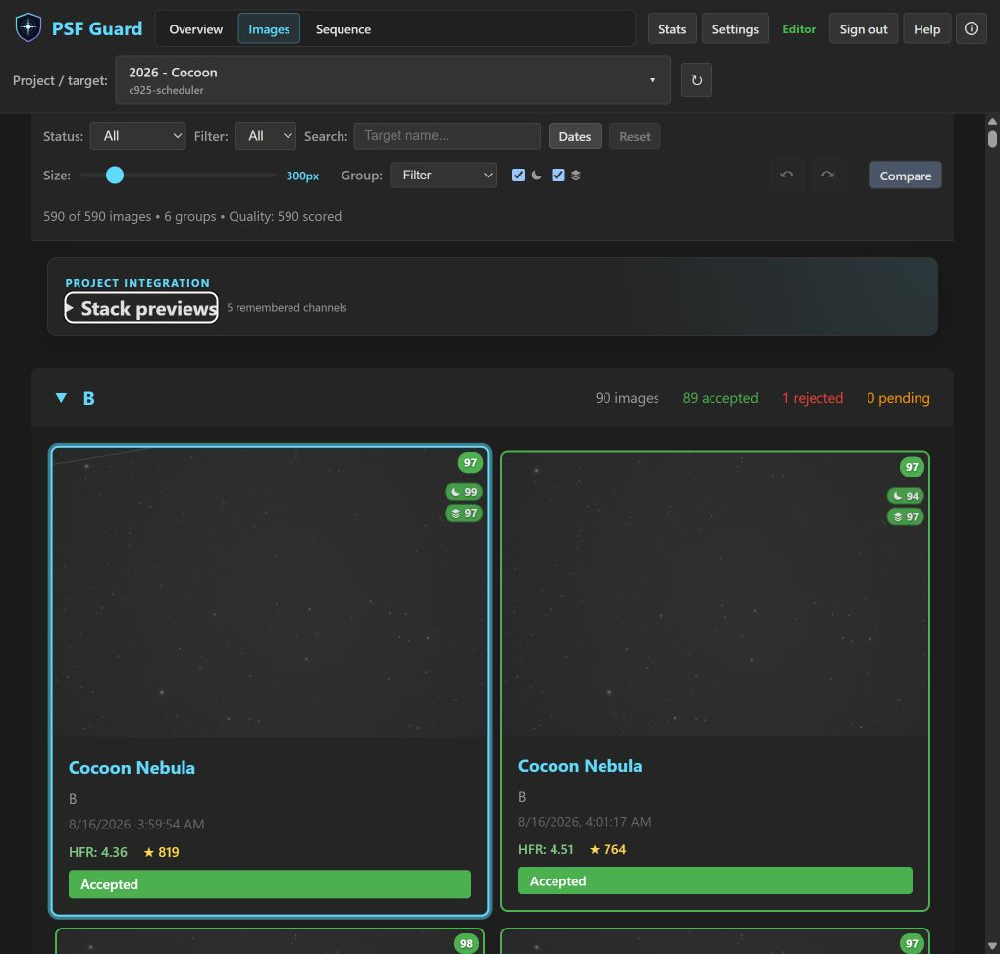
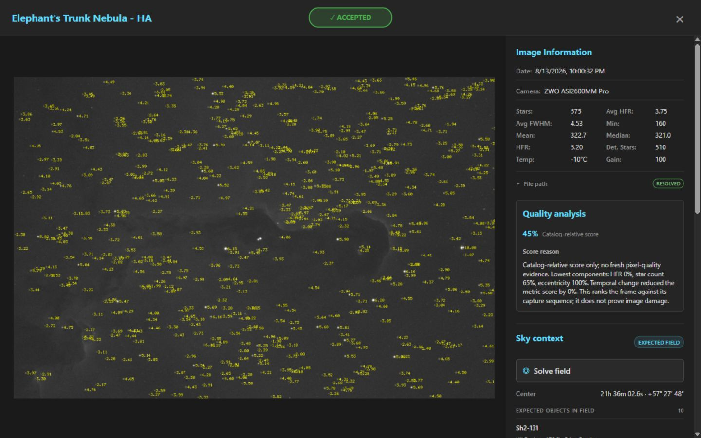
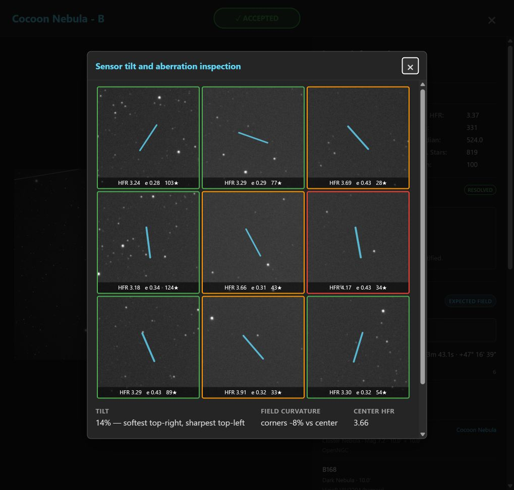
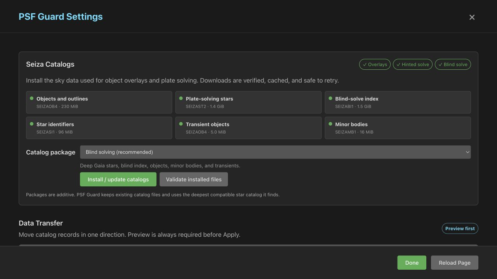

The Grader UI
PSF Guard provides a keyboard-driven user interface for reviewing and grading
sub-exposures. The desktop app includes this interface natively, while the
psf-guard server command serves the same interface to web browsers
for NAS and remote installations. Your grades are saved directly to the active
catalog. If you use an existing Target Scheduler database as the active catalog,
the scheduler can use these grades to replace rejected frames.
You can start from FITS/XISF folders or open an existing Target Scheduler database.
Overview dashboard

The overview dashboard aggregates all your configured catalogs, showing project and target statistics, completion percentages, real-time file discovery status, and filter usage. Click through any project or target to view its grid. After grading, select ⬇ Export on a project or target to compile your accepted frames; see the Export for Stacking guide.


Image grid

- Smart filtering — You can filter frames by project, target, grading status, filter, date range, and search queries, and you can group them by filter, date, or session.
- Batch operations — You can select multiple frames using Shift+Click or Ctrl+Click, or move the cursor with arrow keys and press Space. You can also hold Shift with an arrow key to extend your selection from the keyboard, then accept, reject, or unmark the entire selection.
- Visible selection state — Accepted and rejected cards retain their grade-colored borders when selected. An outer ring and checkmark show the selection without obscuring the grade.
- Stable review position — Operations like preview generation, stack status updates, and database refreshes preserve your current scroll position on the first visible image rather than moving the page.
- Metadata display — Each card displays metadata including measured HFR, star count, and acquisition details.
- Smart loading — The interface loads low-resolution previews first and fetches full-resolution images on zoom. Previews generate in the background, making fresh installations browsable immediately while a "Generating…" badge indicates active background processing.
The responsive narrow-window layout wraps controls for smaller screens.

Review preferences and score chips
Open Settings → Review to configure review behavior for this browser. Under Grading, the option Move to the next image after accept, reject, or pending controls whether applying a grade automatically advances the cursor. Hold Shift while you accept, reject, or unmark to temporarily invert this auto-advance behavior for that single frame.
Under Score chips, you can toggle the display of two comparison badges:
- Night-session score chip — The moon badge ranks a frame within its specific capture session.
- All-sessions score chip — The stacked-layers badge ranks a frame against all comparable stack candidates for that target and filter across all sessions. This chip appears when multiple sessions are available for comparison.


The Grid and Sequence toolbars repeat these choices as compact moon and stacked-layers toggles. Your browser setting controls both views, so a frame retains the same score context as you navigate through the grader. The grading preference also applies in the detailed image viewer. The main score badge represents the active comparison context. Hovering over it displays a tooltip indicating whether it is a Pixel-assisted score or a Catalog-relative score.
Star overlays and measured HFR
Open a frame and press S to toggle the live star overlay. The
annotated-star image displays your star detections, labeling each with its
measured HFR next to the circle. You can limit the maximum star count to keep
the overlay legible in dense star fields; label sizes scale with the preview size
to preserve readability.
HocusFocus star detection automatically utilizes the frame's focal length and pixel size when both metadata headers are available. Wide-field exposures retain smaller stars, while long-focal-length images use a stricter detection preset. Images that lack scale headers fall back to standard detector behavior.

S in the image inspector compares the active frame with the detector's star positions and per-star HFR measurements.Sensor tilt and aberration inspector
Open a frame and press I to launch the Sensor tilt and
aberration inspection tool. The inspector displays nine 1:1 crops in a
3×3 mosaic and reports the median HFR, eccentricity, and star count for each
region. The border color of each crop indicates its softness relative to the sharpest
region. A line indicates the average direction of star elongation, where a thicker line
represents a more consistent elongation direction across the region.
The summary report includes Tilt, Field curvature, and Center HFR. A soft edge opposite a sharp edge suggests sensor tilt. Soft corners around a sharper center suggest field curvature. Uniform elongation across the entire sensor typically points to guiding errors or wind. Because atmospheric seeing can mimic these aberrations, you should evaluate several frames to confirm a diagnosis.

I displays a 3×3 mosaic comparing star sharpness and elongation across nine sensor regions at 1:1 scale.Comparison mode

Comparison mode displays two frames side by side with synchronized or independent zoom and pan, which is useful for evaluating borderline frames against known-good neighbors. You can accept, reject, or unmark both images simultaneously.
Sky context and plate solving
When you open a frame, the interface displays the catalog objects expected near
its target coordinates. If the frame lacks an embedded WCS, you can select
Solve field or press O to run Seiza against the
pixels. A successful solve enables the sky overlay, which displays catalog labels,
outlines, an RA/Dec grid, the solved pixel scale, and the measured target offset.
For details on catalog setup, Docker configuration, and API integration, see the
Sky Context & Plate Solving guide.

Sequence view

The Sequence view plots per-frame quality over an acquisition session, tracking metrics like HFR, star counts, and—after running Scan Quality—spatial, photometric, and pixel-derived astrometry signals. Flagged frames are classified as occlusion, clouds, sky brightening, off-target pointing, pointing drift/jump, or unsolved. The analyzer flags intentional framing changes as advisory, while frame excursions and within-segment drift are flagged as rejectable. The interface presents the specific evidence for your review before writing recommended rejections to the database. For more information, see the guides on Quality Screening and Astrometry Quality.
The Sequence view uses the same controls as the image grid: you can use the same arrow keys to navigate, press Space to select frames, and preserve your active selection when switching between views. When you open and close a detailed image view, you return to your previous scroll position in the grid. Toolbar tabs wrap onto multiple lines on smaller screens, and the grid remembers your thumbnail size setting across reloads.
You can also start the quality analysis directly from the image grid, where the analysis controls appear when scannable frames are available.
Keyboard shortcuts
| Key | Action | Key | Action |
|---|---|---|---|
| K / → | Next image | A | Accept |
| J / ← | Previous image | X | Reject |
| ↑ / ↓ | Nearest grid row | Space | Toggle selection |
| Shift + arrow | Extend grid selection | Shift + A / X / U | Invert grade advance once |
| Enter | Open image | C | Compare |
| Esc | Clear / close | U | Unmark |
| S | Stars overlay | I | Tilt inspector |
| O | Solve / sky overlay | ||
| + / − | Zoom | ||
| Ctrl+Z | Undo | Ctrl+Y | Redo |
Where grades go
Every grading action updates the gradingStatus field in the active
catalog, and the interface tracks your undo and redo history. PSF Guard uses the Target
Scheduler database schema for all catalogs it creates. If you open or synchronize a
live Target Scheduler database, the scheduler counts the accepted images against your
active exposure plans and schedules replacement frames for rejected exposures.